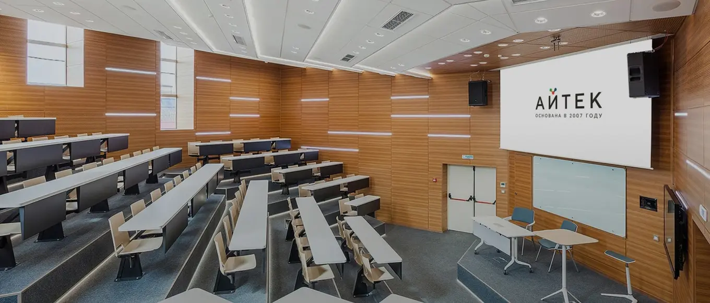
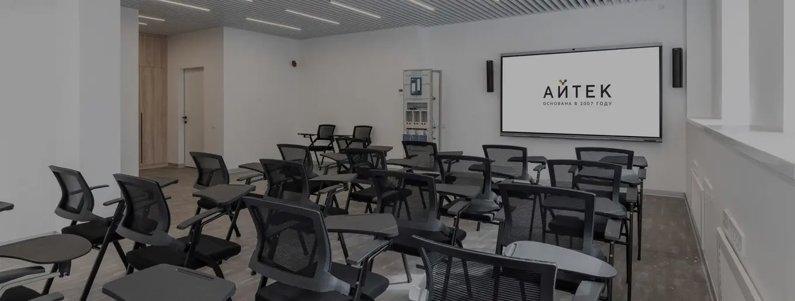

Тюменский университет
Тюмень · 60 рабочих дней
Комплексное оснащение лекционного зала в городе Москва

Стоимость и срок указаны для этого объекта. Смета нового проекта зависит от помещения, комплектации и состава работ.
Компания Радиус Автоматика обратилась в ГК Айтек с задачей оснащения лекционного зала, превратив его в современное мультимедийное пространство. Задача была не просто установить оборудование, а создать удобную, функциональную среду для проведения разнообразных мероприятий: от лекций и семинаров до видеоконференций. ГК Айтек взяла на себя ответственность за реализацию этого проекта, включая подбор оборудования, установку, настройку и обучение пользователей.
Специалистами ГК Айтек был успешно завершён проект по комплексному оснащению объекта современным мультимедийным оборудованием под ключ. В ходе реализации проекта был произведён весь спектр работ — от поставки оборудования и разработки проектной документации до финальной отладки систем. Состав реализованного комплекса: Интерактивная сенсорная панель 86" Звуковые настенные колонны Потолочный микрофонный массив для участия в ВКС Камеры захвата с умным наведением на активного спикера Скрытая многоуровневая коммутация Централизованное управление всем оборудованием с единого пульта
В рамках данного проекта компанией Айтек был проведён комплекс работ по продаже, монтажу и запуску оборудования. Работы над проектом осуществлялись в рамках существующего ремонта.
ГК “Айтек” с успехом реализовала проект, предложив комплексное решение, охватывающее все этапы от проектирования до пусконаладки, обеспечивая высокое качество и функциональность реализованных решений.
В центре зала интерактивная видеопанель 86 дюймов. В ней встроен компьютер, который запускает необходимые программы для видеоконференций, такие как Skype, Zoom и другие. Панель установлена на специальный настенный кронштейн. Для управления видеопанелью предусмотрены беспроводная клавиатура и мышь, а также отдельный монитор оператора - для контроля за работой системы.
Видеосъемка и передача изображения участников мероприятия в программу для видеоконференций осуществляется с помощью умной видеокамеры. Она может панорамировать, наклоняться и масштабировать изображение, а еще автоматически наводиться на говорящего человека, что делает видеоконференции динамичными и удобными.
Каждый участник мероприятия получает личный беспроводной микрофон. Это позволяет свободно передвигаться по залу и не ограничиваться одним местом. Благодаря этим микрофонам каждое слово звучит четко и ясно.
Система озвучания зала обеспечивает качественное воспроизведение речи участников, звука от удалённых абонентов в видеоконференции, а также звуковой дорожки видеороликов. Благодаря этой системе лекции и семинары становятся еще более захватывающими и познавательными.
В бриф перейдут выбранный проект, тип помещения и бюджет примера. Все параметры можно изменить.